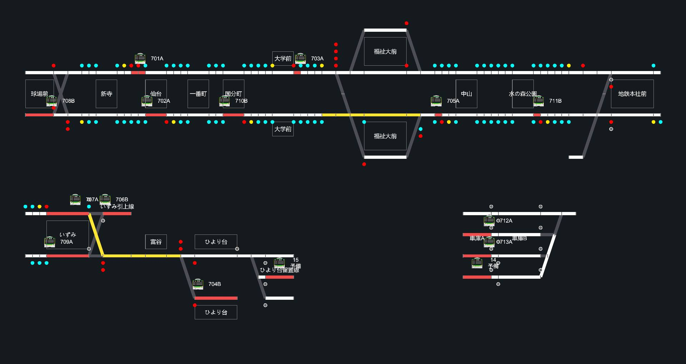
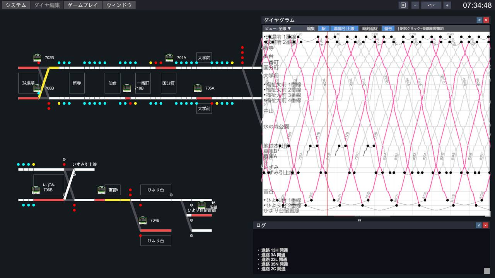
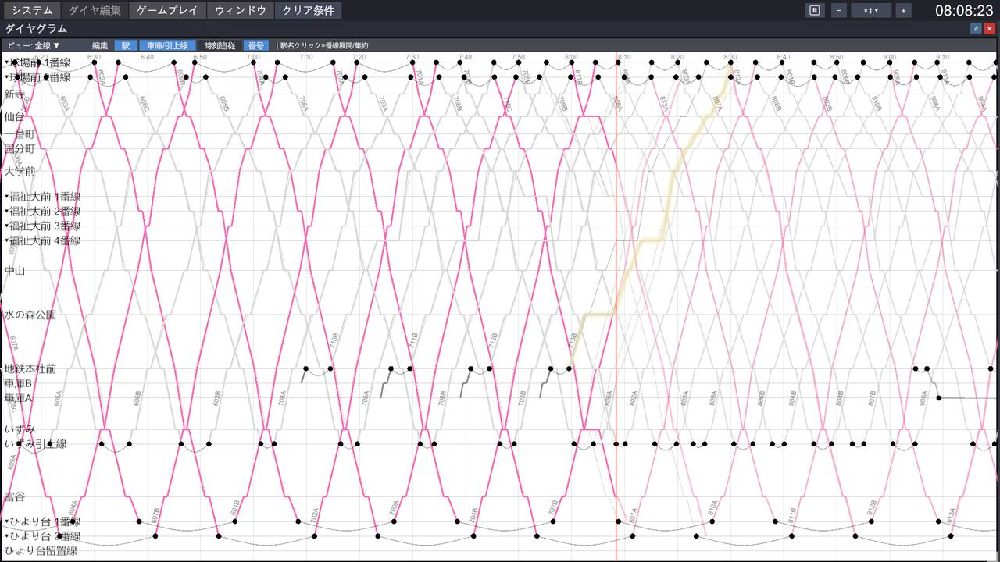
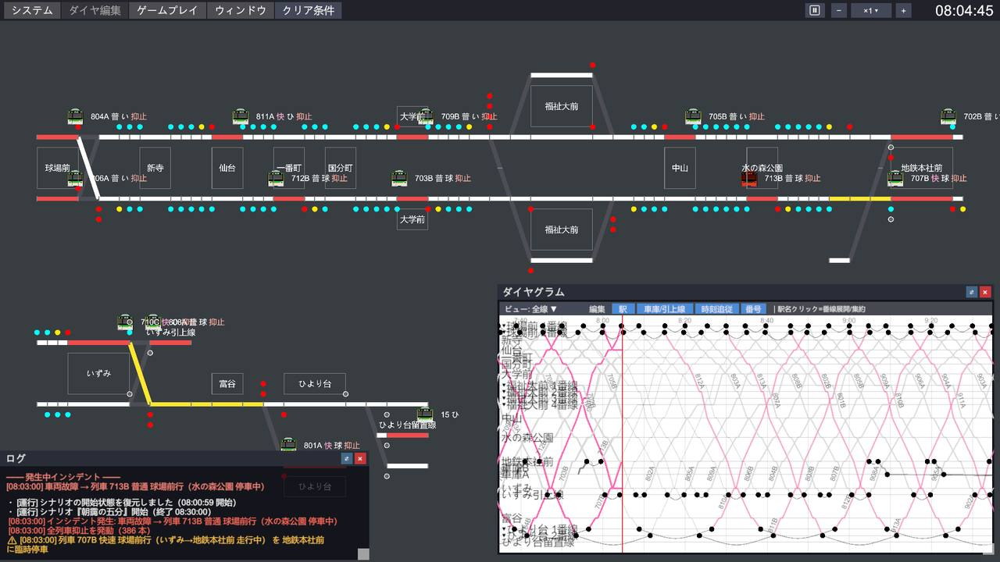
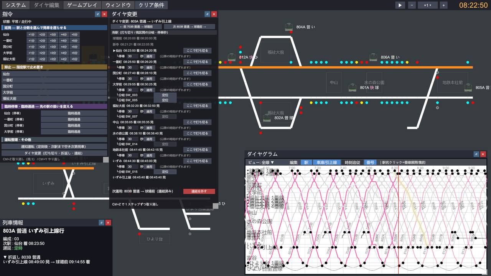
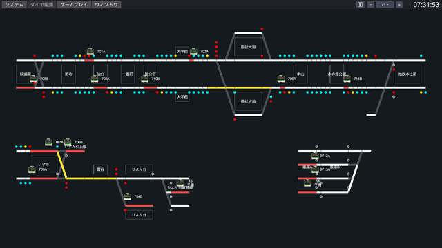
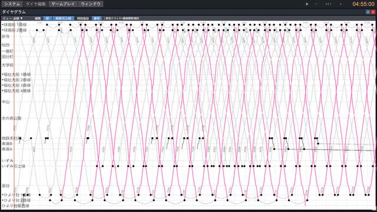
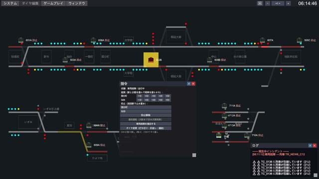
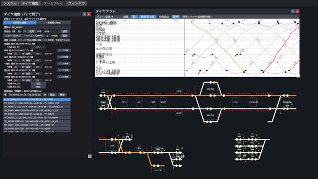
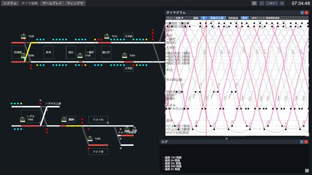

Railway Dispatcher Pro — Official Site
あなたは運転指令員。路線全体を見渡す指令台に座り、何十本もの列車を時間どおりに走らせる。乱れたダイヤを、あなたの指令で取り戻せ。
Concept
「鉄道運行管理シミュレーター」で駅構内の信号扱いを極めたら、次はその上のレイヤーへ。Proが預かるのは、一つの駅ではなく路線のすべて。信号・進路・ダイヤ・車両運用——全部があなたの盤面です。
駅構内の信号・進路を手動で操作し、列車を定時に送り出す「信号扱い所」の体験。
路線全体を俯瞰し、ダイヤグラムを読み、運転整理の指令で乱れを収束させる「輸送指令所」の体験。
Features
路線全体の在線・信号・開通進路をリアルタイムに映すCTC盤。どの駅で列車が詰まり、遅れがどこへ波及していくのか——盤面がすべてを教えてくれます。留置線や車庫の入出庫まで、運行のすべてがここに。

指令員の武器はダイヤグラム。計画のスジに、遅延を織り込んだ予測、そして実績が重なって描かれ、乱れの行き先を先読みできます。盤面とスジ、2つの画面を行き来しながら次の一手を組み立てる——それが指令の醍醐味。

車両故障——朝ラッシュの本線上で。そんな最悪の瞬間から、指令の仕事は始まります。抑止・延発・臨時停車・臨時通過・折返し・打ち切り。運転整理の手札を切って、雪崩れていくダイヤを立て直してください。

各エピソードにはクリア条件と評価があり、遅延をどこまで抑え込めたかが数字で示されます。同じ乱れでも、指令が違えば結果が変わる。何度でも挑んで、最善の運転整理を見つけてください。
ダイヤ編集機能で、スジを一本一本自分の手で設計できます。停車時分、行き違い、折返し運用まで自由自在。「自分のダイヤ」が何百本の列車になって走り出す瞬間は、この上ない快感です。

How to Play
むずかしい操作はありません。見て、決めて、指令する。その繰り返しが、そのまま運行管理の面白さです。
CTC盤とダイヤグラムで状況を把握。どこで遅れが生まれ、どこへ広がろうとしているか。
どの列車を先に通すか、どこで折り返すか。正解は一つではありません。あなたの判断がダイヤになります。
抑止、延発、臨時停車、折返し——指令メニューから即座に実行。列車たちが応えてくれます。
見る → 決める → 指令する。そして、ダイヤが回復していく。
※ v2でここに「ある朝の指令業務」を追体験する読み物コンテンツを追加予定
Episodes
本作の舞台は、架空の地方私鉄。車両故障、大雨、強風、ポイント不転換——現実の鉄道で実際に起きる運行障害をモチーフにしたエピソードに、指令員として挑みます。
鉄道知識ゼロでも大丈夫。5本のチュートリアルが基本操作から上級の駅扱いまで段階的に案内します。画面上の赤枠ガイドが「次に押す場所」をそのまま指し示すので、説明書を読まなくても手が覚えていきます。
朝ラッシュのさなか、上り列車が本線上で車両故障。復旧までわずか5分——それでも高密度ダイヤでは後続がみるみる詰まる。運転整理の、はじめの一歩。
大雨による25km/hの速度規制。徐行の影響は一部にとどまらず、間隔と接続を乱して全線へ広がる。規制が解けるまでの約30分、路線全体の遅れを最小に抑えよ。
夕ラッシュ、ポイント不転換で待避線が使用不能に。駅扱いで手動進路を操り、限られた番線をやりくりして、帰宅の波をさばききれ。
強風で一部区間が運転見合わせ。復旧の見込みは立たない。分断された路線の両側に折返し運転を仕立て、終わりの見えない見合わせに輸送を保ち続ける。
早朝、快速が単線区間の入口で立ち往生。以北は封鎖同然に。すべての列車を手前で折り返し、限られた線路の上で輸送を組み立て直す。
エピソードごとに複数のクリア条件が設定され、プレイ中は条件窓に達成状況がリアルタイムの数値で表示されます。「あと何分の遅れまで耐えられるか」を横目に指令を打つ緊張感——同じ乱れでも、指令が違えば結果は変わります。
Gallery





Product
Series
駅構内の信号・進路を手動で操作する、シリーズ第1作。まず「駅を捌く」面白さから入りたい方はこちらから。Proと両方遊ぶと、鉄道運行の全レイヤーが見えてきます。
SteamストアページへFAQ
遊べます。チュートリアルが基本操作から順に案内するので、信号やダイヤグラムが初めてでも大丈夫。慣れてきたら、より難しい乱れに挑戦してください。
大丈夫です。本作は独立した作品で、ストーリーやデータの引き継ぎはありません。
動画配信・実況・切り抜き・収益化は、すべて事前許諾不要で自由に行っていただけます。収益はすべて配信者様のものです。要確認：Pro向け配信ガイドライン文言
アーリーアクセス期間中は収録内容を順次拡充し、正式版で完成となります。EA版をご購入いただくと、そのまま正式版までアップデートで遊べます。要確認：EA収録内容の確定